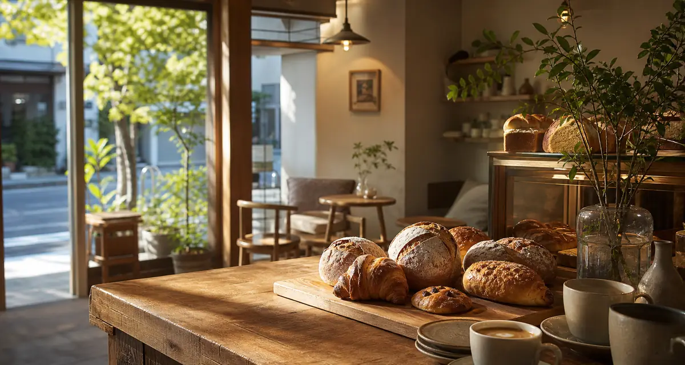
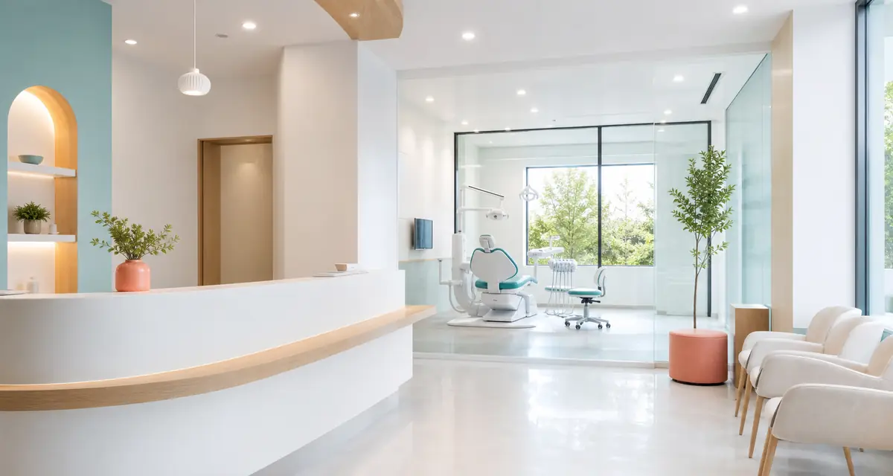
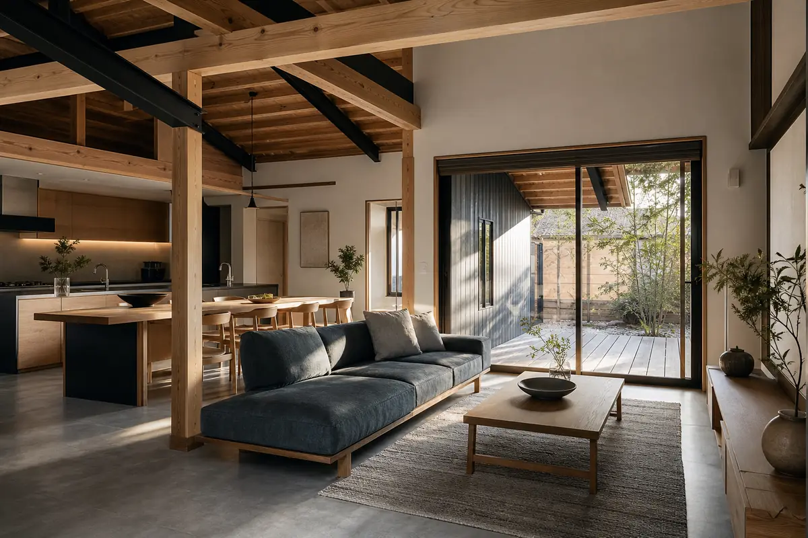

CrowdWorks Portfolio Samples
雰囲気の違うHP制作サンプル集
カフェ、歯科クリニック、住宅リノベーションの3業種を想定した架空サイトです。 デザインの幅、写真選定、情報整理、スマホ対応の見せ方を比較しやすい構成にしました。



3 Styles
実績欄に並べやすい3タイプ
掲載時の見せ方メモ
クラウドワークスでは「架空サイトの自主制作」と明記したうえで、 制作範囲を「トップページ構成、レスポンシブ対応、写真生成、コーディング」と書くと伝わりやすいです。